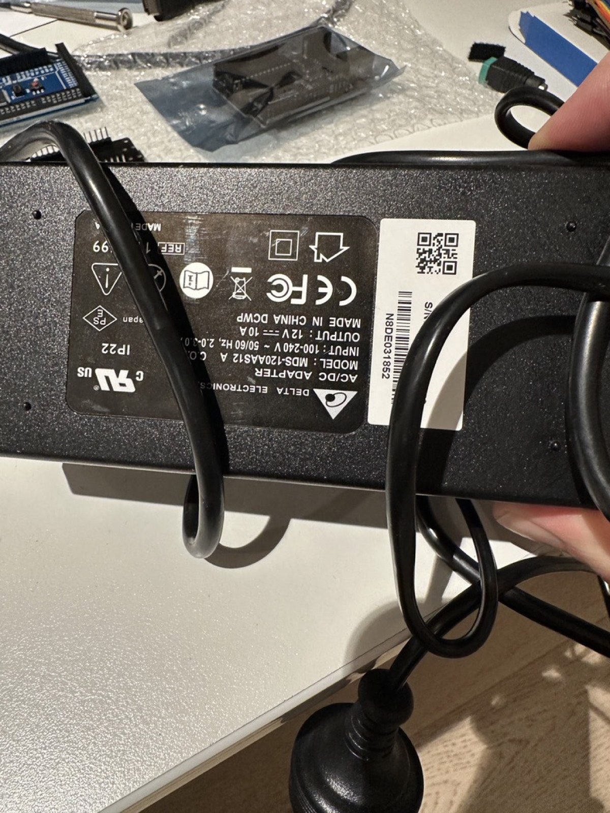
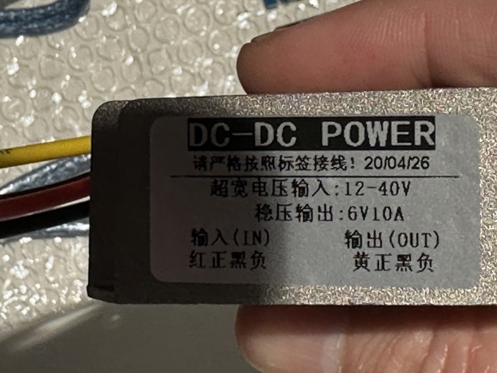
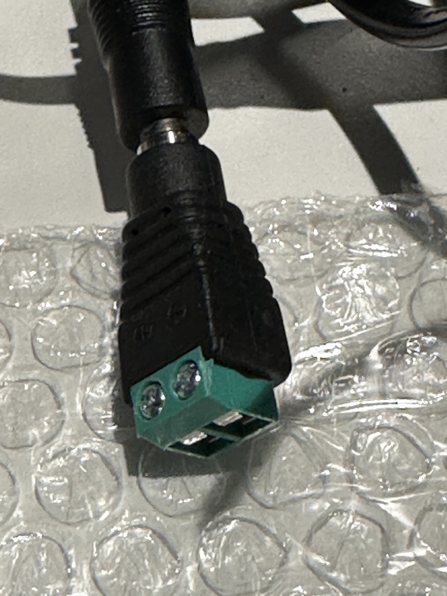
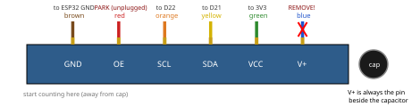
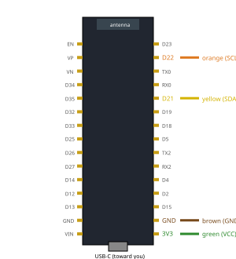
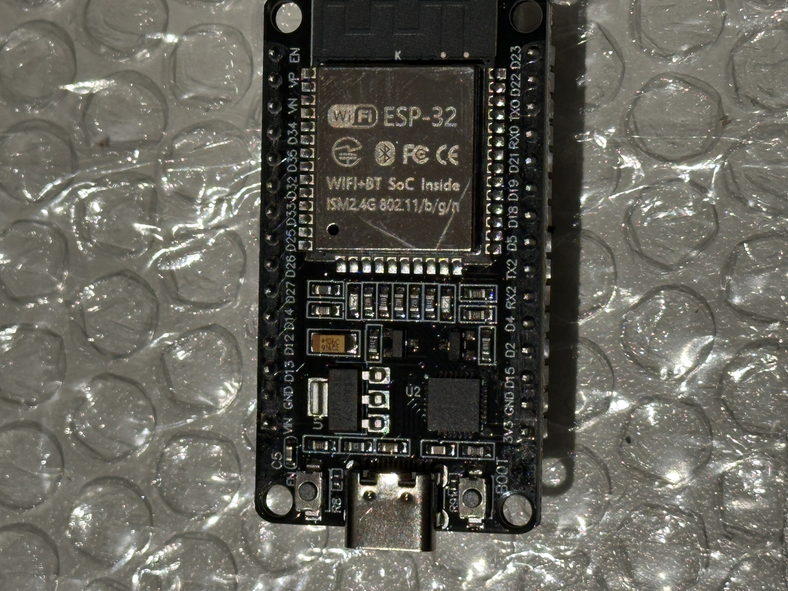

Install 1/4 — Hardware & Wiring¶
Wire the electronics before installing any software. The authoritative,
always-current wiring reference is hardware/wiring.md in the repository —
this page summarizes it and states the power rules that must never be
violated.
Power rules (read first)¶
The 12V supply must NEVER touch the servos or PCA9685 V+
MG996R servos accept 4.8–7.2V. Connecting the 12V supply directly to the servo rail or the PCA9685 V+ terminal destroys them. The 12V supply feeds only the buck-boost converter input.
- Servo rail path: 12V/10A supply → converter input; converter 6V output → PCA9685 V+ terminal block. The PCA9685's onboard 1000µF capacitor absorbs stall spikes.
- Keep the converter → PCA9685 wires short and thick — stall currents are large and voltage sag on thin wire causes brownouts and jitter.
- ESP32 is powered by USB-C, never from the servo rail.
- Common ground: the ESP32 ground and the 6V servo rail ground must be connected — I2C does not work without a shared reference.
- USB-only power is for single-servo bench testing only. Never move more than one servo without the converter connected. (An adjustable bench adapter — e.g. a SHNITPWR 3.5–36V unit — set to 6V can substitute for USB power in single-servo tests, but its 3A ceiling makes it equally unsuitable for multi-servo work.)


Converter wire colors¶
Straight from the unit's label (the Chinese instruction on it translates to "wire strictly according to the label"):
| Wire | Role | Connects to |
|---|---|---|
| Red | Input + | 12V supply positive |
| Black (paired with red) | Input − | 12V supply negative |
| Yellow | Output + (6V) | PCA9685 V+ terminal |
| Black (paired with yellow) | Output − | PCA9685 GND terminal |
Red side drinks 12V; yellow side feeds the servos. The two black wires are both negative but belong to their own bundles — use the one physically paired with red for input, the one paired with yellow for output.
Before the PCA9685 sees any of it:
- Power the converter with only the input connected and measure yellow-to-black with a multimeter: expect ~6.0V. Only then land it on the PCA9685's terminal block.
- Double-check polarity at the V+ block before switching on — the PCA9685 has no reverse-polarity protection.
- The output black must share ground with the ESP32 (automatic once both sit on the PCA9685's ground rail).

Connections¶
PCA9685 I2C header — identify direction by the capacitor¶
The 6-pin header order, starting from the end away from the silver
electrolytic capacitor, is GND, OE, SCL, SDA, VCC, V+ — V+ is always the
pin beside the cap.

ESP32 connections¶
| Ribbon color | PCA9685 pin | ESP32 pin | Notes |
|---|---|---|---|
| brown/black (end pin) | GND | GND |
required common-ground link — I2C is dead/flaky without it |
| red | OE | leave unplugged | already pulled low (enabled); future kill-switch option |
| orange | SCL | D22 (GPIO22) |
Arduino Wire default clock |
| yellow | SDA | D21 (GPIO21) |
Arduino Wire default data |
| green | VCC | 3V3 |
logic supply for the PCA9685 chip only — 3.3V, never 5V/VIN |
| blue (beside cap) | V+ | 🛑 remove from ribbon | 6V servo rail — never to the ESP32 |
Pin locations on the 30-pin devkit — hold it USB-C toward you, antenna
away; the right-hand row reads 3V3, GND, D15, D2, D4, RX2, TX2, D5, D18,
D19, D21, RX0, TX0, D22, D23 from the USB end:


Power and servo connections¶
| From | To | Notes |
|---|---|---|
| Converter 6V + (yellow) | PCA9685 V+ terminal block | short, thick wires |
| Converter 6V − (black) | PCA9685 GND terminal block | short, thick wires |
| 12V supply | Converter input (red +, black −) | converter accepts 12–40V in |
| Servos 1–6 | PCA9685 channels 0–5 | joint1 → channel 0 … joint6 → channel 5; mind the signal/V+/GND pin order |
The PCA9685 uses I2C address 0x40 (all address jumpers open — the default).
Printable bench sheet
All of this — plus safety rules and a bring-up checklist — is on the
3-page A4 wiring bench sheet
(a living artifact: regenerate it with
uv run --with reportlab python hardware/make_bench_sheet.py, which also
rebuilds the pinout diagrams on this page).
Before powering anything¶
- [ ] Set and verify the converter output is 6.0V with a multimeter before connecting it to the PCA9685 (adjustable modules often ship at a different setpoint).
- [ ] Confirm no servo or PCA9685 V+ path can see 12V.
- [ ] Confirm ESP32 ground and servo-rail ground are common.
- [ ] Leave all servo horns detached until calibration (step 4) so an uncalibrated command can't strain the arm.
Next: Install 2/4 — Firmware.